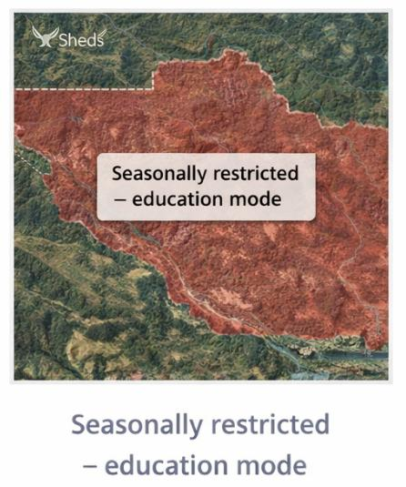
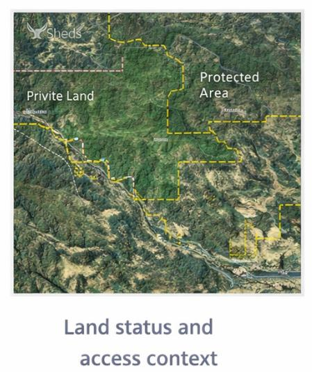
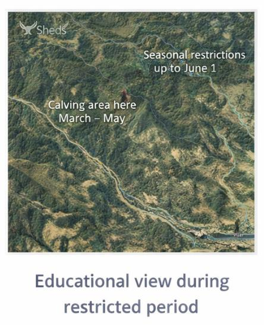

GIS-based shed hunting decision support.
Sheds helps people make informed, responsible decisions about where and when to explore. It emphasizes seasonal awareness, land context, and wildlife sensitivity—prioritizing restraint and understanding.
These examples illustrate the types of spatial context Sheds will use to support responsible, seasonally appropriate decision-making.


